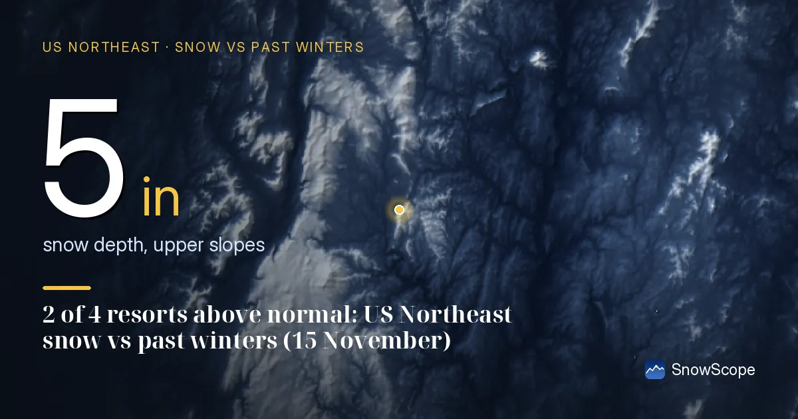

2 of 4 resorts above normal: US Northeast snow vs past winters (15 November)
2 of 4: that is how many resorts in the US Northeast are clearly above normal today. How does this winter look so far? We set today's snow at 4 resorts in the US Northeast against the same date in each of the past 46 winters. 2 of them are well above normal. On the ground, the first thing we check is the shade: snow lasts where the sun cannot reach it.
See the live snow forecast for Magic Mountain in the SnowScope appSnow depth, powder alerts and the 3D map, free.
What is on the ground
Of the places named here, Magic Mountain leads with about 5 in (13 cm) on its upper slopes; Gore Mountain 4 in (10 cm) and Killington Resort 4 in (10 cm) come next.
Across the region, 41 of 111 resorts in the US Northeast have snow up high today, and our model finds 6,039 sq mi (15,640 km²) of white ground.
The resort numbers describe an area and come from our snow model; the stations measure one point only.
| Resort | Snow depth | New snow, 72 h | Coming, next days | Top |
|---|---|---|---|---|
| Magic Mountain | 5 in (13 cm) | 3 in (8 cm) | 0 in (0 cm) | 2,851 ft (869 m) |
| Gore Mountain | 4 in (10 cm) | 2 in (5 cm) | 0 in (0 cm) | 3,583 ft (1,092 m) |
| Killington Resort | 4 in (10 cm) | 3 in (7 cm) | 0 in (0 cm) | 4,140 ft (1,262 m) |
| Stratton | 4 in (10 cm) | 4 in (10 cm) | 0 in (0 cm) | 3,881 ft (1,183 m) |

Rain up to the top?
On Wednesday 18 November the freezing level climbs to about 10,466 ft (3,190 m), above the top of the lifts at 2,851 ft (869 m): rain can fall even at the top.
Rain on fresh snow makes it heavy and, after a cold night, icy: the days after are better for groomed runs than for powder.
At about 2,113 ft (644 m), Magic Mountain has 0 in (0 cm) today; a normal 15 November has 0 in (1 cm) there.
That is more than in 23 of the 46 past winters on this date.
In past winters the best snow at Magic Mountain usually came early March / mid-March.
Height by height at Magic Mountain: 1,378 ft (420 m) 0 in (0 cm) on the ground, 0 in (0 cm) more in the next 7 days; 2,113 ft (644 m) 0 in (0 cm) on the ground, 0 in (0 cm) more in the next 7 days; 2,851 ft (869 m) 1 in (3 cm) on the ground, 0 in (0 cm) more in the next 7 days.
What to expect next
Forecasts a few days ahead can change: look at the map again the day before you travel.
Against other winters
Nothing unusual at Magic Mountain: 0 in (0 cm) at 2,113 ft (644 m) today, more than in 23 of the past 46 winters, with 0 in (1 cm) as the usual.
At Gore Mountain the snow is about where it should be: 0 in (0 cm) at 2,316 ft (706 m), deeper than in 21 of the past 46 winters (usual: 0 in (1 cm)).
Killington Resort is off to a good start. At 2,651 ft (808 m) our model has 2 in (6 cm) today, more than on this date in 37 of the past 46 winters; the usual is 0 in (1 cm).
Good news from Stratton: 3 in (7 cm) at 2,936 ft (895 m) today, deeper than in 43 of the past 46 winters on this date (usual: 0 in (1 cm)).
Tips for skiers
- South-facing slopes take the most sun and melt first; high, north-facing slopes keep their snow the longest.
- Snow on the map does not mean a resort is open: check lifts and opening dates on the resort's website.
- Early-season snow is thin. Stay on open, groomed pistes: rocks and grass can hide just under the surface.
- Get a powder alert in the SnowScope app to know when Magic Mountain gets fresh snow.
About these numbers
Resort snow depths are the deepest snow on the resort's upper slopes from the SnowScope snow model (about 1 km, run of 15 November); they are estimates for an area, not a measurement at one point. Station values are measurements on the date shown. Forecasts can change. Always read the official avalanche bulletin before going off-piste.
Official avalanche bulletins: Mount Washington Avalanche Center
Cite this report
For research, teaching or the press: the numbers and charts are free to reuse under CC BY 4.0 with this citation.
SnowScope (2026), 2 of 4 resorts above normal: US Northeast snow vs past winters (15 November), https://snowscope.app/blog/en/2026/11/us-northeast-snow-vs-past-winters-15-november-2026.html, accessed 2026-11-15
SnowScope (Atlas Labs). (2026, November 15). 2 of 4 resorts above normal: US Northeast snow vs past winters (15 November). SnowScope snow reports. https://snowscope.app/blog/en/2026/11/us-northeast-snow-vs-past-winters-15-november-2026.html
BibTeX
@misc{snowscope2026usnortheastsnowvspastwin,
author = {{SnowScope (Atlas Labs)}},
title = {2 of 4 resorts above normal: US Northeast snow vs past winters (15 November)},
year = {2026},
month = nov,
howpublished = {\url{https://snowscope.app/blog/en/2026/11/us-northeast-snow-vs-past-winters-15-november-2026.html}},
note = {Published 2026-11-15 20:22 UTC; accessed 2026-11-15}
}· CC BY 4.0 · Methods, data and tools →
Magic Mountain: snow and temperature by height, this winter vs last (tools) →
Follow Magic Mountain
Free: a message when fresh snow is coming, and the forecast every morning.
More snow reports

On November 10, the freezing level reaches 5,313 ft (1,620 m) above Northeast summits, bringing rain before 20–25 cm of snow arrives.

Mad River Glen, Vermont: natural snow, about 30 in (75 cm) at the usual peak at mid-mountain over 46 past winters, February deepest. Three ways to plan a day there.

Where will it snow in the US Northeast between 13 November and 26 November, and how much? We asked the two global models that reach two weeks, ECMWF …